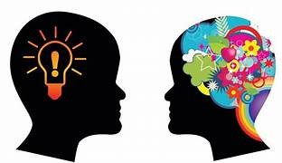

COMUNICACIÓN ASERTIVA
La comunicación asertiva es una habilidad esencial para expresar pensamientos, emociones y necesidades de manera honesta y respetuosa, sin agredir ni someterse a los demás. A continuación, te presento una guía estructurada para comprender en profundidad la comunicación asertiva, sus componentes, beneficios y técnicas clave.
¿Qué es la Comunicación Asertiva?
La comunicación asertiva es un estilo de comunicación que busca un equilibrio entre la expresión abierta de las propias necesidades y el respeto hacia los demás. A diferencia de los estilos pasivo (que evita el conflicto) y agresivo (que tiende a imponerse sobre los demás), la comunicación asertiva promueve una interacción clara, respetuosa y efectiva
Características de la Comunicación Asertiva
• Claridad: Los mensajes son claros y directos, evitando ambigüedades y rodeos.
• Respeto: Asegura que tanto los propios derechos como los de los demás sean respetados.
• Empatía: Incluye la comprensión de las emociones y perspectivas de los demás, facilitando una comunicación más efectiva y menos conflictiva.
• Autenticidad: Permite expresar los propios pensamientos y sentimientos de forma genuina y sin manipulación.
Beneficios de la Comunicación Asertiva
• Fortalece las relaciones personales y laborales: Mejora la confianza mutua y facilita el entendimiento.
• Reducción del estrés: Al expresar las propias necesidades de manera clara y respetuosa, se disminuye la acumulación de tensiones.
•Mejora la autoestima y el autocontrol: Las personas que se comunican asertivamente suelen tener una mayor autoconfianza y control sobre sus emociones.
• Resuelve conflictos de forma pacífica: La comunicación asertiva ayuda a resolver problemas sin recurrir a la confrontación o a la pasividad.
Técnicas de Comunicación Asertiva
Para lograr una comunicación asertiva efectiva, existen varias técnicas útiles:
a. Uso de “Yo” en las afirmaciones
Evitar culpar o señalar a otros ayuda a que el mensaje se reciba sin defensiva. Por ejemplo:
• En lugar de decir: “Tú siempre llegas tarde,” decir: “Yo me siento frustrado cuando los encuentros no inician a tiempo.”
b. Escucha Activa Prestar atención plena al interlocutor, mostrando interés mediante el lenguaje corporal (contacto visual, asentimientos) y repitiendo o parafraseando sus ideas para asegurar comprensión.
c. Lenguaje Corporal El tono de voz, las expresiones faciales y la postura son elementos clave en la comunicación asertiva. Mantener una postura relajada y un tono calmado refuerza el mensaje de respeto y apertura.
d. Técnicas para decir “No”
Es importante ser capaz de rechazar peticiones sin sentirse culpable. Una forma asertiva de decir “no” es explicando las razones de manera breve y firme, sin necesidad de excusas largas ni justificaciones.
e. Técnica de “Disco Rayado” Consiste en repetir la misma respuesta de manera calmada cuando el interlocutor insiste en un tema en el que no estamos dispuestos a ceder, sin perder la calma ni entrar en discusiones.
Ejemplos de Comunicación Asertiva
• Ejemplo en el Trabajo: En lugar de decir “No puedo hacer todo esto,” decir “Puedo encargarme de estas tareas prioritarias, pero necesitaré más tiempo o ayuda para abordar las otras.”
• Ejemplo en una Relación Personal: “Me siento ignorado cuando estás en el teléfono mientras hablamos. Aprecio mucho nuestra comunicación y me gustaría tener toda tu atención.”
Desafíos Comunes y Cómo Superarlos
Miedo al conflicto: Muchas personas evitan la comunicación asertiva por temor a crear conflictos. Superar esto implica reconocer que el respeto mutuo es la base de las interacciones saludables.
• Falta de práctica: La comunicación asertiva requiere entrenamiento. Se puede comenzar con situaciones de bajo riesgo para ganar confianza.
Autocontrol emocional: Es importante aprender a gestionar las emociones antes de comunicarse, para evitar caer en un tono pasivo o agresivo.
Conclusión
La comunicación asertiva es una herramienta poderosa que facilita la interacción respetuosa y efectiva en cualquier ámbito de la vida. A través de su práctica, se pueden mejorar significativamente las relaciones personales y profesionales, reducir conflictos, y aumentar el bienestar personal.
RESOLUCIÓN DE PROBLEMAS
La resolución de problemas es una habilidad crucial que implica la capacidad de identificar desafíos, analizar sus causas, idear soluciones y actuar de manera efectiva. Esta habilidad es aplicable a todos los aspectos de la vida, desde el trabajo hasta las relaciones personales, y contribuye a una toma de decisiones más informada y consciente.
¿Por qué es importante la resolución de problemas?
La capacidad para resolver problemas nos permite adaptarnos a las circunstancias y superar obstáculos. Ayuda a reducir el estrés, mejora la eficacia en el trabajo y promueve relaciones saludables. Además, incrementa la confianza y la autonomía, ya que nos capacita para enfrentar y gestionar situaciones desafiantes sin depender de otros
Etapas clave en la resolución de problemas
La resolución de problemas puede descomponerse en varios pasos, que permiten organizar el proceso y garantizar soluciones efectivas:
Definir y Comprender el Problema
Este primer paso consiste en reconocer y especificar el problema claramente. Es fundamental evitar asumir que sabemos lo que está mal sin investigar, ya que una mala interpretación puede llevarnos a soluciones equivocadas. Al definirlo, es útil responder preguntas como: “¿Qué está ocurriendo?” y “¿Por qué es un problema?”
Analizar las Causas
Una vez comprendido el problema, es importante identificar las causas subyacentes. Esto implica analizar los factores que han llevado a la situación actual y descartar posibles síntomas. Técnicas como el análisis de causa y efecto o el diagrama de Ishikawa ayudan a visualizar los factores detrás del problema.
Generar Soluciones Posibles
Es el momento de crear una lista de posibles soluciones. Es importante no limitarse en esta etapa y dejar que fluyan las ideas sin juzgarlas. Se pueden emplear técnicas como la lluvia de ideas o el mapa de ideas para explorar múltiples enfoques.
Evaluar y Seleccionar la Mejor Opción
Aquí se revisa cada solución potencial considerando su viabilidad, costo, tiempo de implementación y posibles consecuencias. Este análisis ayuda a descartar opciones menos prácticas y permite elegir la solución más efectiva. Es recomendable involucrar a otros si el problema afecta a varias personas, para obtener perspectivas y seleccionar una solución de consenso.
Implementar la Solución Elegida
Tras elegir la mejor alternativa, es hora de ponerla en práctica. La implementación debe ser planificada y monitoreada para asegurarse de que se lleva a cabo como se diseñó. Es importante que todas las personas involucradas entiendan los pasos y sus roles para evitar errores.
Evaluar los Resultados
La última fase implica revisar los resultados para comprobar si el problema se ha solucionado o si son necesarios ajustes adicionales. Este análisis final permite aprender de la experiencia y mejorar la habilidad de resolución de problemas para situaciones futuras.
Técnicas y Estrategias Útiles para Resolver Problemas
• Lluvia de Ideas (Brainstorming): Favorece la generación de ideas en grupo, permitiendo explorar soluciones creativas.
Diagrama de Ishikawa o Espina de Pescado: Ayuda a visualizar las causas de un problema, agrupándolas en categorías
• Método de los “5 Porqués”: Consiste en preguntar “¿Por qué?” varias veces hasta llegar a la raíz del problema.
• Análisis DAFO: Evalúa las fortalezas, debilidades, oportunidades y amenazas, útil para problemas estratégicos.
Ejemplos Prácticos de Resolución de Problemas
1.Problema en el Trabajo: Imagina que tu equipo está retrasado en la entrega de un proyecto. Al analizar, descubres que el problema radica en una mala distribución de tareas y falta de comunicación. Para resolverlo, podrías organizar reuniones semanales de actualización y asignar tareas de acuerdo con las habilidades de cada miembro. 2.Conflicto Personal: Si tienes un conflicto con un amigo por malentendidos, podrías aplicar técnicas de escucha activa para comprender su perspectiva y buscar una solución en la que ambas partes se sientan satisfechas.
Conclusión
La resolución de problemas es una habilidad práctica que permite manejar situaciones difíciles de forma organizada y efectiva. Desarrollarla no solo ayuda a enfrentar desafíos con éxito, sino que también promueve el crecimiento personal y profesional. Al aplicar estos pasos y técnicas, se incrementa la probabilidad de encontrar soluciones duraderas y beneficiosas en diversos contextos de la vida.
PENSAMIENTO CREATIVo
El pensamiento creativo es la capacidad de generar ideas, conceptos o soluciones originales y útiles. Va más allá de la lógica lineal y convencional, promoviendo enfoques innovadores que desafían lo establecido. A continuación, se exploran sus características, técnicas para fomentarlo y su relevancia en distintos ámbitos
¿Qué es el Pensamiento Creativo?
El pensamiento creativo se refiere a un proceso mental que permite ver problemas y situaciones desde perspectivas nuevas y distintas, generando soluciones innovadoras que no habrían surgido con un enfoque tradicional. Es una habilidad que se puede desarrollar y mejorar, beneficiando tanto a nivel personal como profesional, especialmente en tareas que requieren innovación y resolución de problemas.
Componentes Clave del Pensamiento Creativo
• Originalidad: Implica la capacidad de idear respuestas y enfoques que no se basen únicamente en experiencias previas, sino en una mirada fresca.
• Fluidez de Ideas: Es la habilidad de generar una gran cantidad de ideas o soluciones para un mismo problema, aumentando las posibilidades de encontrar una opción innovadora.
Flexibilidad: Consiste en adaptarse y cambiar de perspectiva cuando sea necesario, evitando que los patrones de pensamiento habituales limiten el proceso.
• Elaboración: Es el desarrollo y refinamiento de las ideas, añadiendo detalles y mejorando su aplicabilidad.

Técnicas para Desarrollar el Pensamiento Creativo
Existen diversas técnicas que estimulan la creatividad y ayudan a romper con la rigidez mental. Algunas de las más efectivas incluyen:
1. Lluvia de Ideas (Brainstorming)
Permite generar una gran cantidad de ideas sin filtro ni juicio inicial. Este proceso ayuda a liberar la creatividad sin miedo a ser criticado, y es especialmente útil en equipos, donde las ideas de una persona pueden inspirar a otros.
2. Mapas Mentales
Organizar ideas visualmente mediante diagramas permite explorar conexiones que, de otro modo, podrían pasar desapercibidas. Esta técnica ayuda a ver el problema en su totalidad y a identificar relaciones y patrones.
3. Técnica de los Seis Sombreros de Pensamiento
Desarrollada por Edward de Bono, esta técnica permite considerar un problema desde seis perspectivas distintas: lógica, emocional, optimista, crítica, creativa y de control. Al “ponerse” cada sombrero, se exploran diferentes ángulos y se obtiene una visión más completa.
4. Analogías y Metáforas
Usar analogías o metáforas permite encontrar soluciones a problemas complejos relacionándolos con situaciones más familiares. Este enfoque puede desencadenar ideas originales al aplicar conceptos de un área a otra.
5. Técnicas de Restricción Creativa
A veces, imponerse limitaciones (por ejemplo, resolver un problema usando solo ciertos recursos) estimula la creatividad al obligar a pensar fuera de las soluciones convencionales.
Ejemplos de Aplicación del Pensamiento Creativo
• En el ámbito empresarial: Las empresas que fomentan el pensamiento creativo en sus empleados tienden a desarrollar productos y servicios más innovadores. Por ejemplo, compañías tecnológicas como Apple o Google utilizan equipos multidisciplinarios y técnicas de ideación para proponer ideas de productos disruptivos.
• En la vida cotidiana: La creatividad no se limita a las artes o los negocios; también es útil en situaciones comunes. Un ejemplo podría ser reorganizar el hogar de una manera más funcional, encontrando nuevas maneras de aprovechar el espacio disponible.
• En la resolución de conflictos: Abordar un conflicto desde una perspectiva creativa puede ayudar a encontrar soluciones que satisfagan a ambas partes. Por ejemplo, en una negociación, se podría buscar una solución “fuera de la caja” que ambos lados no habían considerado.
Barreras Comunes al Pensamiento Creativo y Cómo Superarlas
• Miedo al Fracaso: La creatividad requiere valentía para intentar cosas nuevas y posiblemente fallar. Para superarlo, es útil adoptar una mentalidad de “aprendizaje”, en la que cada intento, exitoso o no, aporta algo valioso.
• Rigidez Mental: La costumbre de pensar de manera lineal limita las posibilidades. Practicar técnicas como el pensamiento lateral o el uso de metáforas puede ayudar a salir de estos patrones rígidos.
• Entorno Poco Estimulante: Un entorno monótono o excesivamente estructurado tiende a frenar la creatividad. Crear un espacio de trabajo inspirador o programar momentos de exploración y reflexión puede ayudar a mantener la mente activa.
Importancia del Pensamiento Creativo
El pensamiento creativo es esencial en el mundo actual, donde la adaptabilidad y la innovación son altamente valoradas. Desarrollar esta habilidad ayuda a enfrentar desafíos con mayor flexibilidad y a destacar en áreas que requieren soluciones originales. En definitiva, el pensamiento creativo es una competencia valiosa para el éxito profesional y personal, promoviendo la innovación y la capacidad de adaptación en un entorno en constante cambio.
Conclusión
El pensamiento creativo es una habilidad poderosa que permite abordar los problemas y oportunidades desde perspectivas únicas. A través de técnicas como la lluvia de ideas, los mapas mentales y las restricciones creativas, es posible desarrollar esta capacidad y superar barreras que inhiben la creatividad. Al practicar y fomentar el pensamiento creativo, se abren nuevas posibilidades en todos los aspectos de la vida.
GENERO Y SEXUALIDAD
Genero
El género se refiere a las construcciones sociales y culturales que determinan cómo se espera que actúen, piensen y se vean las personas en función de su sexo asignado al nacer. Esto incluye atributos, roles y comportamientos que son considerados apropiados para hombres y mujeres dentro de una cultura específica.. La identidad de género es la percepción interna de una persona sobre sí misma como hombre, mujer, o cualquier otra identidad no binaria, lo que puede o no coincidir con el sexo asignado al nacer.
Sexualidad
La sexualidad, por otro lado, abarca un amplio espectro que incluye la atracción sexual, la intimidad emocional, los deseos y comportamientos sexuales. Es un aspecto central del ser humano que se manifiesta a lo largo de la vida e incluye diversas orientaciones sexuales como heterosexualidad, homosexualidad, bisexualidad, asexualidad, entre otras.. La sexualidad también está influenciada por factores biológicos y socioculturales y puede cambiar a lo largo del tiempo.
Diferencias fundamentales
• Construcción Social vs. Biológica: El género es una construcción social que varía según el contexto cultural y temporal, mientras que la sexualidad incluye componentes biológicos (como hormonas) y psicológicos (como la atracción emocional)
• Identidad vs. Atracción: La identidad de género se refiere a cómo una persona se identifica internamente, mientras que la orientación sexual describe hacia quién siente atracción.
• Expresión vs. Comportamiento: La expresión de género es cómo una persona presenta su género al mundo (a través de la vestimenta y el comportamiento), mientras que la sexualidad abarca las relaciones y prácticas sexuales.
Intersecciones
Ambos conceptos son interdependientes. Por ejemplo:
• Las normas de género pueden influir en cómo las personas experimentan su sexualidad. Las expectativas culturales pueden limitar o expandir las formas en que se vive la sexualidad.
• La discriminación basada en el género o la orientación sexual puede tener efectos negativos en la salud mental y el bienestar de los individuos.
DISCAPACIDAD Y NEURODIVERSIDAD
Discapacidad
La discapacidad se refiere a limitaciones en la función física, mental o sensorial que afectan la capacidad de una persona para llevar a cabo actividades cotidianas. Según el DSM-V, las discapacidades pueden incluir condiciones como la discapacidad intelectual, que implica deficiencias en las funciones cognitivas y conductas adaptativas, afectando el funcionamiento diario del individuo.
. Las discapacidades pueden ser permanentes o temporales y varían en gravedad.
Neurodiversidad
La neurodiversidad es un concepto que celebra las variaciones naturales en el funcionamiento neurológico de las personas. Se originó en la comunidad del autismo y aboga por la idea de que diferencias como el Trastorno del Espectro Autista (TEA), el TDAH, la dislexia y otras condiciones no deben ser vistas como patologías a corregir, sino como variaciones normales del cerebro humano.
. Este enfoque promueve la aceptación y adaptación de entornos para incluir a personas neurodivergentes.
Intersección entre Discapacidad y Neurodiversidad
• Perspectiva Inclusiva: La neurodiversidad desafía la noción tradicional de discapacidad al proponer que las diferencias neurológicas son variaciones biológicas normales. Esto implica un cambio de enfoque desde la deficiencia hacia las fortalezas y capacidades únicas de cada individuo.
• Modelo Social de Discapacidad: Este modelo sugiere que muchas de las dificultades enfrentadas por personas con discapacidades son el resultado de barreras sociales y ambientales, no solo de sus condiciones individuales. Por lo tanto, al promover la neurodiversidad, se busca eliminar estas barreras para facilitar una mayor inclusión.
• Reconocimiento de Fortalezas: Las personas neurodivergentes pueden enfrentar desafíos específicos, pero también poseen habilidades únicas que pueden contribuir significativamente a la sociedad. Por ejemplo, se ha demostrado que equipos con miembros neurodivergentes pueden ser más productivos en ciertas áreas.
EL MALESTAR EN LA CULTURA
El concepto de malestar en la cultura, formulado por Sigmund Freud en su ensayo de 1930, aborda la infelicidad inherente a la vida en sociedad. Freud identifica las tensiones entre las pulsiones humanas y las restricciones culturales como fuentes principales de sufrimiento. A continuación, se exploran sus ideas centrales y su relevancia contemporánea.
Fuentes del Malestar
Freud argumenta que el malestar en la cultura proviene de tres fuentes principales:
1. La naturaleza: La fuerza de la naturaleza es vista como un poder que somete al ser humano.
2. El cuerpo: Las limitaciones físicas y el sufrimiento que el cuerpo puede causar son un aspecto central del malestar.
3. Las relaciones interpersonales: Las interacciones con otros, tanto en contextos sociales como amorosos, generan conflictos y sufrimiento.
Pulsiones y cultura
Freud sostiene que la cultura busca establecer unidades sociales más grandes, lo que a su vez restringe la satisfacción de las pulsiones sexuales y agresivas. Esta represión de las pulsiones lleva a un aumento del sentimiento de culpa, lo que contribuye al malestar. Cuanto más se desarrolla la cultura, más se intensifica este malestar, ya que el progreso cultural implica un costo emocional significativo.
Relevancia actual
A pesar de haber sido escrito hace casi un siglo, el análisis de Freud sigue siendo relevante en el contexto contemporáneo. La relación entre las exigencias culturales y el bienestar individual continúa siendo un tema crítico en psicología y sociología. En un mundo donde las expectativas sociales son cada vez más complejas, el malestar puede manifestarse en diversas formas, desde ansiedad hasta problemas de salud mental.
Interpretaciones modernas
Los pensadores contemporáneos han ampliado las ideas freudianas para incluir consideraciones sobre cómo las dinámicas sociales, económicas y tecnológicas afectan el bienestar psicológico. Por ejemplo, la Escuela de Frankfurt ha explorado cómo los cambios en la producción y el consumo pueden generar un nuevo tipo de malestar relacionado con la alienación en la vida moderna.